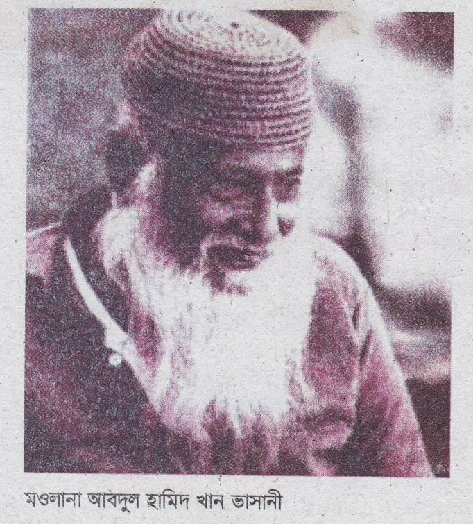
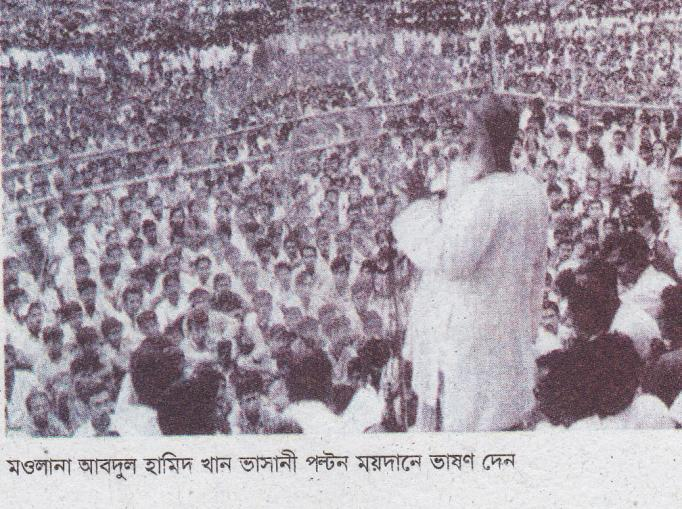
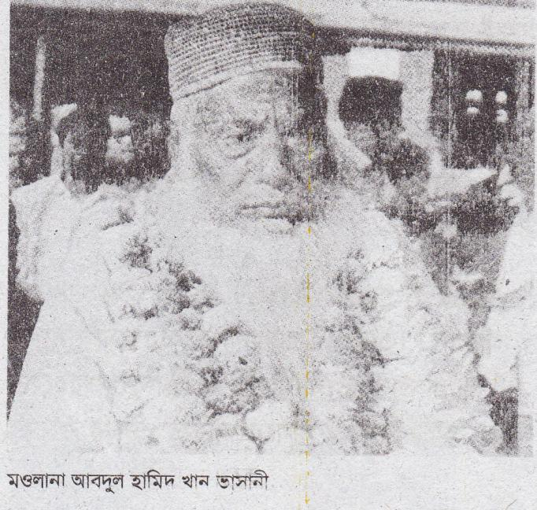
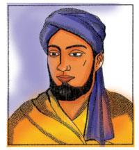

মাওলানা আবদুল হামিদ খান খাসানী
বাংলার কৃষক-মজুর-শ্রমিকের অতি আপনজন, মওলানা আবদুল হামিদ খান ভাসানী। চিরকাল নির্যাতিত, নিপীড়িত মানুষের কাছাকাছি এসে দাঁড়িয়েছেন তিনি। মজলুম মানুষের সুখে দুঃখে কাঁধে কাঁধ মিলিয়ে তাদের কথা বলেছেন। সংগ্রাম করেছেন। এজন্য তিনি মজলুম জননেতা।

সিরাজগঞ্জের ধানগড়া গ্রামের এক দরিদ্র কৃষক পরিবার। এ পরিবারে আবদুল হামিদ খানের জন্ম হয় ১৮৮০ সালে। তাঁর বাবার নাম হাজী শরাফত আলী খান। মায়ের নাম মোসাম্মৎ মজিরন বিবি। অল্প বয়সেই তিনি পিতৃমাতৃহীন হন। তাঁর এক চাচা ইব্রাহীম খান তাঁকে শৈশবে আশ্রয় দেন। এ চাচার কাছ থেকেই তিনি মাদরাসায় পড়াশোনা করেন। এ সময় তিনি ইরাক থেকে আগত এক পীর সাহেবের স্নেহদৃষ্টি লাভ করেন। তিনি তাঁকে ভারতের দেওবন্দ মাদরাসায় পাঠিয়ে দেন। এ সময় তিনি দেশাত্মবোধে উদ্বুদ্ধ হন।
মাদরাসার পড়া শেষ করে তিনি টাঙ্গাইলের কাগমারির এক প্রাইমারি স্কুলে শিক্ষকতা শুরু করেন। এখানে শিক্ষকতার সময় তিনি জমিদারের অত্যাচার, নির্যাতিত দেখতে পান। এর বিরুদ্ধে প্রতিবাদ ও সংগ্রাম শুরু করেন। ফলে জমিদারের বিষ-নজরে পড়ে তাঁকে কাগমারি ছাড়তে হয়।
বাইশ বছর বয়সে কংগ্রেস নেতা দেশবন্ধু চিত্তরঞ্জন দাশের আদর্শে তিনি অনুপ্রাণিত হন। পরে তিনি রাজনীতিতে যুক্ত হন। এরপর অসহযোগ আন্দোলনে যোগ দেন। তাঁকে কারারুদ্ধ করা হয়। সতের মাস পর তিনি মুক্তি পান। এরপর ১৯২৪ সালে সিরাজগঞ্জে তিনি এক সভায় ভাষণ দেন। এই ভাষণে তিনি কৃষক সাধারণের ওপর জমিদারদের শোষণ, নিপীড়ন ও অত্যাচারের কাহিনি তুলে ধরেন। এই সভায় ভাষণের জন্য তাঁকে নিজের জন্মভমি ছাড়তে হয়। তিনি এবার চলে যান আসামের জলেশ্বরে। এ বছরই আসামের ধুবড়ি জেলার ভাসানচরে তিনি এক বিশাল প্রতিবাদী সমাবেশের আয়োজন করেন। এ সভায় তিনি বাঙালি কৃষকদের ওপর অত্যাচারের বিরুদ্ধে প্রতিবাদ জানান। এই সমাবেশেই সাধারণ কৃষকরা তাঁকে ভাসানচরের মওলানা নাম দেয়।
১১০পরে তাঁকে ভাসানী নাম দেয়। তখন থেকেই তাঁর পরিচয় হয় মওলানা ভাসানী। মওলানা ভাসানী এদেশে একটি প্রিয় নাম।
মওলানা ভাসানী তাঁর এক ভাষণে বলেছেন, ‘আমি খেটে-খাওয়া মানুষের কথা বলি। এই মানুষেরা কাজ করে খেতে-খামারে, কাজ করে কলে-কারখানায়। এরা কৃষক, এরা শ্রমিক। আর এরাই জমিদার, মহাজন, মালিকের জুলুমের শিকার হয়। ’
মূলত সারা জীবন তিনি এই নিপীড়িত মানুষের জন্যই সংগ্রাম করেছেন। ১৯৪৭ সালে ভারত বিভাগের পর তিনি আসাম থেকে পূর্ববাংলায় চলে আসেন। তিনি পূর্ব পাকিস্তান আওয়ামী মুসলিম লীগ প্রতিষ্ঠা করেন। পরে সংগঠনের নাম হয় পূর্ব পাকিস্তান আওয়ামী লীগ। তিনি টাঙ্গাইলের কাগমারিতে বাস করতে শুরু করেন। ১৯৫২ সালে রাষ্ট্রভাষা আন্দোলনে জড়িত থাকার কারণে তিনি আবার গ্রেফতার হন।
১৯৫৪ সালের সাধারণ নির্বাচনে তিনি শেরে বাংলা এ. কে. ফজলুল হক ও হোসেন শহীদ সোহরাওয়ার্দীর সঙ্গে যুক্তফ্রন্ট গঠন করেন। যুক্তফ্রন্ট এ নির্বাচনে বিপুল ভোটে জয়ী হয়।
১৯৫৭ সালে ভাসানী টাঙ্গাইলের কাগমারিতে এক বিশাল আন্তর্জাতিক সাংস্কৃতিক সম্মেলন আহ্বান করেন। এ সম্মেলন ‘কাগমারি সম্মেলন’ নামে খ্যাত। এ সম্মেলনে যোগ দেন দেশ-বিদেশের বহু খ্যাতিমান মানুষ। এ সম্মেলনে তিনি পূর্ব পাকিস্তানের মানুষের বঞ্চনার চিত্র তুলে ধরেন।
মওলানা ভাসানী বুঝতে পেরেছিলেন পাকিস্তানের পশ্চিম অংশের শাসকরা ধর্ম ও জাতীয় সংহতির নামে পূর্ববাংলার মানুষকে শোষণ করছে। জনগণকে সঙ্গে নিয়ে পাকিস্তানি স্বৈরাচারী সরকারের বিরুদ্ধে প্রবল গণআন্দোলন গড়ে তোলেন। ১৯৭০ সালের ডিসেম্বরে তিনি পল্টন ময়দানে ভাষণ দেন। এই ভাষণে শোষণের এই কথাটিই বারবার উচ্চারণ করে জাতিকে সতর্ক করে দিয়েছিলেন তিনি। তিনি বলেছিলেন-পাকিস্তানি সরকার পূর্ব পাকিস্তানের জনগণের ওপর অত্যাচার ও নিপীড়ন চালাচ্ছে, এরূপ চলতে থাকলে পূর্ব পাকিস্তান একদিন স্বাধীন দেশ হয়ে যাবে।


১৯৭১ সালের ২৫এ মার্চ মধ্যরাত থেকে দেশব্যাপী পাকিস্তানি সৈন্যদের হত্যাযজ্ঞ শুরু হয়। এসময় বঙ্গবন্ধু শেখ মুজিবুর রহমানের নেতৃত্বে শুরু হয় মুক্তিযুদ্ধ। মওলানা ভাসানীর টাঙ্গাইলের ঘরবাড়ি পাকিস্তানি সৈন্যরা পুড়িয়ে দেয়। মুক্তিযুদ্ধে অংশ নেওয়ার জন্য তিনি ভারতে চলে যান। মুক্তিযুদ্ধ চলাকালে তিনি প্রবাসী বাংলাদেশ সরকারের উপদেষ্টামণ্ডলীর সদস্য ছিলেন।
১৯৭১ সালে ১৬ই ডিসেম্বর পাকিস্তানি সেনাবাহিনী আত্মসমর্পণ করলে তিনি স্বাধীন বাংলাদেশে ফিরে আসেন। স্বাধীনতার পরও কোনো পদমর্যাদা ও মোহ তাঁকে আকৃষ্ট করতে পারেনি। তিনি সবসময় জনগণের পাশে থেকে বিভিন্ন জনমুখী কর্মসূচি পালন করেন।
মওলানা ভাসানী নিজে প্রাতিষ্ঠানিক লেখাপড়া করতে পারেননি। কিন্তু এ দেশের মানুষের শিক্ষা প্রসারে তাঁর অনেক অবদান ছিল। তিনি সন্তোষে ইসলামি বিশ্ববিদ্যালয়, মহীপুরে হাজী মোহাম্মদ মহসিন কলেজ, ঢাকায় আবুজর গিফারি কলেজ এবং টাঙ্গাইলে মওলানা মোহাম্মদ আলী কলেজ প্রতিষ্ঠা করেন।
মওলানা ভাসানী ছিলেন একজন নিরহংকার আদর্শবান মানুষ। তাঁর জীবনাচরণ ছিল অত্যন্ত সাদামাটা ও সহজ-সরল। তিনি টাঙ্গাইলের সন্তোষে একটা সাধারণ বাড়িতে বাস করতেন। খেতেন সাধারণ মানুষের খাবার। এরকম অনাড়ম্বর জীবনযাপন খুব কম দেখা যায়।
১৯৭৬ সালের ১৭ই নভেম্বর। এদিন মজলুম জননেতা মওলানা আবদুল হামিদ খান ভাসানী ৯৬ বছর বয়সে ঢাকা মেডকেল কলেজ হাসপাতালে মৃত্যুবরণ করেন। তাঁর মৃত্যুতে আমাদের দেশের রাজনীতিতে একটি যুগের অবসান ঘটে। তাঁকে টাঙ্গাইল জেলার সন্তোষে ইসলামি বিশ্ববিদ্যালয় প্রাঙ্গণে সমাহিত করা হয়।
মওলানা ভাসানীর জীবন থেকে আমরা প্রগাঢ় স্বদেশপ্রেম, প্রগতিশীল আদর্শ ও প্রতিবাদী চেতনার শিক্ষা পাই। তিনি চিরকাল শ্রদ্ধায় ও ভালোবাসায় বেঁচে থাকবেন এ দেশের কোটি কোটি মানুষের হৃদয়ে।
১১২অনুশীলনী
১. শব্দগুলো পাঠ থেকে খুঁজে বের করি। অর্থ বলি।
|
নির্যাতিত |
নিপীড়িত |
মজলুম |
বিষ-নজর |
কারারুদ্ধ |
|
প্রতিবাদী |
সমাবেশ |
কাগামারি |
সম্মেলন |
প্রবাসী |
|
আত্মসমর্পণ |
মোহ |
অনাড়ম্বর | ||
২. ঘরের ভিতরের শব্দগুলো খালি জায়গায় বসিয়ে বাক্য তৈরি করি।
|
বাসী |
আত্মসমর্পণ |
মোহ |
সরকার |
প্রতিবাদী |
ক. যুদ্ধের সময় সমগ্র বাংলাদেশের মানুষ [……………………] হয়ে উঠেছিল।
খ. আজ প্রায় বিশ বছর ধরে আনিস সাহেব […………………………………]।
গ. [………………………………………….] ছাড়া দেশ চালানো মুশকিল।
ঘ. সৎলোকের ধনসম্পত্তির উপরে [……………………………] থাকে না।
ঙ. পাকিস্তানি সেনাবাহিনী ১৯৭১ সালের ১৬ই ডিসেম্বর […………………………] করে।
৩. প্রশ্নগুলোর উত্তর মুখে মুখে বলি ও লিখি।
ক. মজলুম জননেতা কে ছিলেন? কেন তাকে মজলুম জননেতা বলা হয়?
খ. মওলানা ভাসানী কোথায় পড়াশোনা করেন?
গ. কেন তাকে কাগমারি ছাড়তে হয়েছিল?
ঘ. কীভাবে তাঁর নাম মওলালা ভাসানী হলো?
ঙ. পল্টন ময়দানের ভাষণে তিনি যা বলেছিলেন তার বিষয়বস্তু কী?
চ. শিক্ষার ক্ষেত্রে মওলানা ভাসানী কী অবদান রেখেছেন?
ছ. মওলানা ভাসানীর জীবন থেকে তুমি কী শিখতে পেরেছ?
৪. নিচের শব্দগুলো দিয়ে বাক্য রচনা করি।
|
মজলুম |
কারারুদ্ধ |
প্রতিবাদ |
অনাড়ম্বর |
|
মোহ |
আত্মসমর্পণ |
নিপীড়িত | |
৫. জেনে নেই।
দেশবন্ধু চিত্তরঞ্জন দাশ-ব্রিটিশ-বিরোধী আন্দোলনের একজন মহান নেতা। পশ্চিমবঙ্গের কলকাতায় ১৮৭০ সালে দেশবন্ধু চিত্তরঞ্জন দাস জন্মগ্রহণ করেন। তাঁর পৈতিৃক নিবাস বাংলাদেশের মুন্সীগঞ্জ জেলার তেলিরবাগ গ্রামে। তিনি যেমন ছিলেন বিখ্যাত রাজনীতিবিদ, তেমনি ছিলেন একজন কবি ও সম্পাদক। এ দেশের হিন্দু ও মুসলমানদের মধ্যে ঐক্য ও সম্প্রীতি প্রতিষ্ঠার জন্য সারাজীবন কাজ করেছেন। তিনি ছিলেন বাংলার সাধারণ মানুষের অতি প্রিয় নেতা। ১৯২৫ সালে তাঁর মৃত্যুতে রবীন্দ্রনাথ ঠাকুর ও কাজী নজরুল ইসলাম কবিতা লিখে শ্রদ্ধা জানান।
৬. ঠিক উত্তরটিতে টিক () চিহ্ন দিই।
ক. মওলানা ভাসানী চিরকাল কেমন মানুষের পাশে দাঁড়িয়েছেন?
১. নির্যাতিত
২. অবহেলিত
৩. সুখী
৪. বড়লোক
খ. মওলানা ভাসানী কোন পীর সাহেবের স্নেহদৃষ্টি লাভ করেন?
১. ইরাকের
২. বাংলাদেশের
৩. ভারতের
৪. পাকিস্তানের
গ. তাঁকে কাগমারি কেন ছাড়তে হয়?
১. গ্রামের মানুষের কারণে
২. জমিদারদের কারণে
৩. ব্যবসায়ীদের কারণে
৪. রাজনৈতিক কারণে
ঘ. মওলানা ভাসানী তাঁর এক ভাষণে কী বলেছেন-
১. আমি খেটে-খাওয়া মানুষের কথা বলি
২. আমি আরামপ্রিয় মানুষের কথা বলি
৩. আমি সুখি মানুষের কথা বলি
৪. আমি ভালো মানুষের কথা বলি
১১৪ঙ. মওলানা ভাসানী শেরে বাংলা এ. কে. ফজলুল হক ও হোসেন শহীদ সোহরাওয়ার্দীর সঙ্গে গঠন করেন-
১. যুক্তফ্রন্ট
২. যুক্তদল
৩. যুবদল
৪. যুবফ্রন্ট
চ. মুক্তিযুদ্ধ চলাকালে তিনি প্রবাসী বাংলাদেশ সরকারের উপদেষ্টাপরিষদের কী ছিলেন?
১. সদস্য
২. প্রেসিডেন্ট
৩. সহকারী
৪. কেউ নন
ছ. তিনি কোন নেতার আদর্শে অনুপ্রাণিত হয়ে রাজনীতিতে যুক্ত হন?
১. হোসেন শহীদ সোহরাওয়ার্দী
২. দেশবন্ধু চিত্তরঞ্জন দাশ
৩. শেরে বাংলা ফজলুল হক
৪. শেখ মুজিবুর রহমান
৭. বাক্যের সাথে মিল করে ঠিক শব্দের উপর টিক চিহ্ন দিই।
ক. মজলুম মানুষের সুখে দুঃখে কাঁধে কাঁধ মিলেয়ে তাদের কথা বলেছেন- মওলানা ভাসানী/শেরে বাংলা/শহীদ শোহরাওয়ার্দী
খ. মওলানা ভাসানী কারারুদ্ধ হওয়ার পর মুক্তি পান-তেরো / পনেরো / সতের মাস পরে
গ. তাঁকে ভাসানী নাম দেয়- ভাসানচরের/ কাগমারীর/ ঢাকার সমাবেশের পর
ঘ. মওলালা ভাসানীর টাঙ্গাইলের ঘরবাড়ি পাকিস্তানি সৈন্যরা-পুড়িয়ে দেয়/পাহারা দেয়/ তাদের দখলে নিয়ে নেয়
১১৫